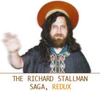

-
Linus
Torvalds pronounces the name "Linux" - (40KB au-file).
-
Linus
Torvalds pronounces the name "Linux" - (40KB au-file).
- Linus Torvalds At USENIX, 1999, speaks about state of Linux - streaming video
| LevSelector.com |
Linux is a free Unix-type operating system which is taking other the world. It will run on your PC, or on Sun Sparc station, or on a small computer size of a match box, or on any other computer platform. The installation may be as big as hundreds of megabytes, or as small as a single 1.44MB floppy. My favorite Linux is Suse Professional
Developed under the GNU General Public License (see also here), the source code for Linux is freely available to everyone. You can download Linux for free, or you can receive it on a CD for as little as $2 per CD. Or you can buy a set of several CDs with hundreds of software packages and a book for $30-$80. Linux will run suprisingly fast on your old computer, which is too slow to run modern version of Microsoft Windows (so don't thow out your old computers). Linux is a collective development of users and programmers around the world. It doesn't belong to anybody and it can not be monopolized by Microsoft or anybody else. Two people should be mentioned as creators of (or major contributors to) Linux:
| -
Linus
Torvalds pronounces the name "Linux" - (40KB au-file).
- Linus Torvalds At USENIX, 1999, speaks about state of Linux - streaming video |
- Richard Stallman sings "Join us now and share free software" - (850KB au-file). |
History of Linux development:
1980s - Richard Stallman creates
a free software movement (GNU project)
which led to development of numerous software tools.
1991 - Linus Torvalds, young student
at the University of Helsinki in Finland, releases (posts on the Internet
under GNU license) the first version of Linux's kernel (Ver. 0.02), which
he developed as a hobby.
1994 - ver.1.0
1999 - current version of Kernel
is 2.2
Linux is an independent POSIX implementation and includes true multitasking,
virtual memory, shared libraries, demand loading, proper memory management,
TCP/IP
networking, and other features consistent with Unix-type systems. It has
reliability of Unix systems, you can customize it to your task (it is open).
Plus you get tonns of software packages for free (office software, programming
tools, graphics, and anything and everything else, including even the Windows
system looking very similar to Microsoft Windows, even including the "Start"
button in the bottom left corner of the screen).
| Linux Links | home - top of the page - |
* http://www.linuxjournal.com/article.php?sid=5525
- Linux Journal Editors' Choice
Awards for 2001
* http://www.linux-on-laptops.com/
- select a laptop to run linux
* www.linux.org -
Linux
main site
* www.linux.org/dist/english.html
- misc distributions (Red Hat, Caldedra, Debian GNU/Linux, Slackware, S.u.S.E.
and many - many - many - many - many - many others).
* www.linux.org/vendors/retailers.html
- retailers in different countires (long list)
* www.redhat.com - Linux
* www.suse.com - Linux
* www.linuxjournal.com
- good journal to subscribe to
* http://dsl.org/cookbook/
- online cookbook / tutorial
* www.linuxdoc.org/LDP/gs/gs.html
-
* www.linux-howto.com/LDP/index.html
- a lot of howto stuff
* www.ecst.csuchico.edu/~dranch/LINUX/TrinityOS.wri
- TrinityOS is a complete Linux server configuration, maintinance, and
security guide for the Linux novice and guru alike!
* metalab.unc.edu/pub/Linux/docs/HOWTO/mini
- IP-masquerade
* www.brasscannon.com/Linux/
- Linux PPP Dial-on-demand and IP Masquerade
* www.linuxdoc.org/ =
http://sunsite.unc.edu/LDP
- Linux documentation project - very good
* freshmeat.net - excelent
"how-to" site
* slashdot.org - excelent "how-to"
site
* metalab.unc.edu/LDP/HOWTO/
- excelent "how-to" site
* www.linuxdoc.org/LDP/gs/gs.html
- Linux Installation and Getting Started
* linux.com.hk/mirror/ldp/LDP/tlk/tlk.html
- Linux Kernel book
* windowmaker.org/ - xxx
* gnome.org/ - xxx
* www.linuxworld.com/linuxworld/lw-1999-12/lw-12-penguin_1.html?1-11
- How to remove Windows 3.x/9x/NT/2000 and install Linux in its place
* www.swcp.com/~jgentry/dialin2.html - dialin
server and good links
* www.jerrypournelle.com/REPORTS/MOSHE_BAR/bar1.html
- home network with Linux as Internet/file server
* www.happyhacker.org
- a book on hacking + root access to their computer - try to hack it
* ftp://ftp.oracle.com/pub/www.oracle8/linux/
- download free Oracle database for Linux
(also available MySQL, PostGRE, Sybase, etc. etc. etc.)
* www.cs.utexas.edu/users/kharker/linux-laptop/
- xxx
| Linux's Forgotten Man | home - top of the page - |
Linux's Forgotten Man
by Leander Kahney
12:00 p.m. 5.Mar.99.PST
SAN JOSE, California - You have to feel for Richard
Stallman.
Like a Russian revolutionary erased from a photograph,
he is being written out of history. Stallman is the originator of the free-software
movement and the GNU/Linux operating system. But you wouldn't know it from
reading about LinuxWorld. Linus Torvalds got all the ink.
Even the name of the operating system, to which Torvalds contributed a small but essential part, acknowledges Torvalds alone: the Stallman part - the GNU before Linux - is almost always left out.
It makes Stallman mad. At a press conference during the show, one unlucky journalist thoughtlessly called it Linux and got an earful for his mistake.
With a mane of long black hair and a Rasputin-like beard, Stallman looks like a wild man. He carries his possessions in plastic bags. In one hand, a bag is crammed with boxes of tea. In the other, he clutches his traveling kit, which includes a battered laptop.
The computer isn't Stallman's. It belongs to the Free Software Foundation, of which he is the founder. Stallman, a programmer who has won a MacArthur Foundation genius award, has never owned his own computer. The loaner runs free software - he has never used Windows.
Nor does Stallman have a car, a TV, or a mortgage. By his own admission, the 46-year-old bachelor lives frugally in a rented room in Cambridge, Massachusetts. He hasn't had a full-time job in 15 years. The little work he does costs his clients an arm and a leg. "I'm working to make software free and make computers free. That's my job," he declares.
Work is also the reason Stallman doesn't want kids. He refuses to dedicate the time to making enough money to raise them.
"I've got more important things to do with my life," he says. "I've a mission that needs work."
That mission began in the early 1980s while working at the Artificial Intelligence Lab at MIT. He began stitching together his own Unix-like operating system, which he called GNU, a recursive acronym for "GNU's Not Unix."
He took bits and pieces from different sources and covered the growing system with a new license called the GNU General Public License, known as "copyleft." This unique license allows the software to be freely copied, modified, and distributed. It is the foundation of the free-software movement.
In the mid-'80s, Stallman resigned from MIT to prevent the institute from laying claim to the growing GNU project.
However, the system lacked an essential component: the kernel, or underpinnings, of the operating system that communicates with hardware. In the early '90s, a young Finnish programmer named Linus Torvalds created one, combined it with the GNU system, and posted the result on the Internet. It was called Linux, a name that stuck.
"They put it together and called it Linux without acknowledging the work that came before," says Stallman. "I think it's unfair to call our work by someone else's name."
While Stallman concedes that Torvald's contribution was essential, he estimates that the kernel represents only about 3 percent of the entire system. In contrast, the GNU project contributed about 30 percent of the code, while the remaining 67 percent was taken from other sources, he says.
The problem with being co-opted, Stallman says, is not one of personal glory, but that most people talking about the system are not talking about issues of freedom.
"I want these ideas to get the publicity. I think it's a damn shame that all the publicity is going to someone who doesn't advocate these ideas of freedom."
That someone, of course, is Torvalds. But is there not a hint of acrimony? Does he not wish he were getting more recognition?
"I hope not. But how can I know for sure? I've got an ego like everyone else. I'm sure my ego wants me to be more famous. I don't know."
In a nutshell, Stallman believes that software must be free, not necessarily available for nothing, but free to be copied, modified, distributed, shared, and fixed.
"I'm not against commercial anything," Stallman said. "I'm against proprietary software that divides and conquers the users."
Unlike commercial software, which is proprietary, free-software programmers don't have to solve the same problems over and over. They keep improving on the work that came before, like the scientific method.
However, in Stallman's eyes, the programming community is more interested in talking about practical issues, like performance - an anathema to Stallman.
And this conflict is partly why Stallman is marginalized. Most people don't want to talk about freedom. There's been a splintering of the movement: away from free software created by ideologues to open-source software created by business-friendly pragmatists like Torvalds.
"[Torvalds] is basically an engineer," Stallman said. "He likes free software, but isn't concerned with issues of freedom. That's why I'm unhappy when the GNU system is called Linux.... People are no longer exposed to the philosophical views of the GNU project."
Does nomenclature matter to the geeks on the show floor? A number of showgoers say they felt in their hearts the correct name was GNU/Linux, but it was easier just to call it Linux.
"I recognize it as GNU/Linux but I don't call
it GNU/Linux because I'm lazy," says one attendee. "I agree that Stallman
didn't get the recognition he deserves, but that's partly because of his
abrasive personality."
| The Personalities Behind Linux | home - top of the page - |
The varied personalities of Linux definitely show the many facets that make up our favorite OS. I was reading the Wired article that had an interview with RMS, and I've seen quite a few interviews with Linus. IMHO, Stallman represents quite a bit of what Linux and it's users is all about, but Torvalds is more a way to market it.
Obviously both Torvalds and Stallman were and are central to the OS. As we all know, the kernel mainly the product of Linus, but most of the tools, and the very license under which Linux was placed is the result of Stallman's GNU. But, these two men don't seem to get along quite as well as the software they wrote. Linux is a coder, but RMS is a zealot.
Stallman's fire, passion, and concern for politics are essential for Linux users. Many people criticize Richard for being overly paranoid, but that paranoia is necessary, especially in the upcoming months and years. As Linux gains mainstream support, there will undoubtedly be blatant violations of the GPL. Slashdot has recently posted at least one story of a new distro that violates the GPL. It's a huge asset to have RMS and similar enthusiasts to vigorously defend the freedom that our "rebel" OS has come to represent.
As a result, I love having RMS go everywhere he can, reminding people of the free nature of Linux. Excuse me, GNU/Linux.
Remind people that Linus didn't write the whole kernel, and owns a very small percentage of the code in any Linux distro. Torvalds will be the first to admit that. And Stallman reminds us that Linux is more about hackers and free code than about the OS itself. It's about making decisions for ourselves, not having to accept a crappy OS.
But as much credit as RMS deserves, he shouldn't necessarily be the spokesman for Linux. While
Stallman looks like a fanatic, Linus is like the penguins; cute, maybe a little plump, but over all, someone who's very likeable. Plus he has a "normal" job, and is making money from Linux (not directly, but through his Transmeta job, speaking, etc.)
As a result, though Stallman deserves tons of
credit, he shouldn't necessarily be on the cover of the magazines. He's
done a great job, as has Linus, but as Linux gets marketed to a more mainstream
audience, we need to look at our figurehead. Stallman ranting to Wired
is great, it gets everyone to stop, think, and be more aware of the politics.
But let's think twice before flaming CNN/Fortune if their latest Newstand
didn't mention RMS. We all know of his contribution, and all geeks appreciate
it. We need him to help lead the movement, but not necessarily to be our
public leader. Let CNN snub him, and let the other mags ignore him. He
has a great product to be proud of. But as great as he is, he's often inflammatory,
nearly always an extremist, and not necessarily who the business community
wants to put it's trust in.
| Attacks and Security | home - top of the page - |
* http://ciac.llnl.gov/ciac/papers/Distributed_System_Intruder.html
* http://www.attrition.org/~modify/texts/phrack/Phrack55/P55-16
http://www.securiteam.com/securitynews/Phrack_55_is_out.html
* http://packetstorm.securify.com/distributed/trinoo.analysis.txt
* http://packetstorm.securify.com/distributed/tfn.analysis.txt
* http://packetstorm.securify.com/distributed/stacheldraht.analysis